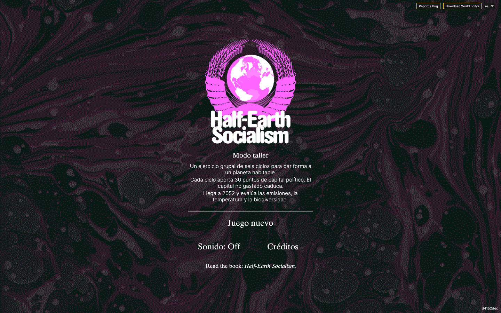
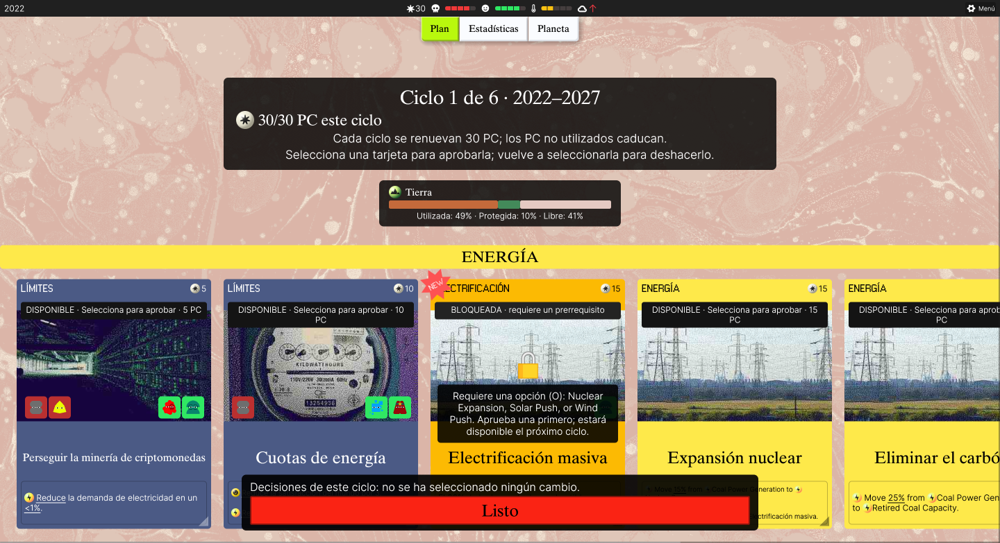
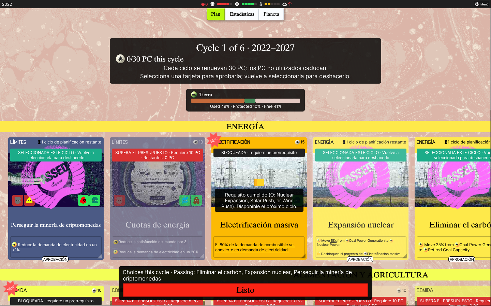
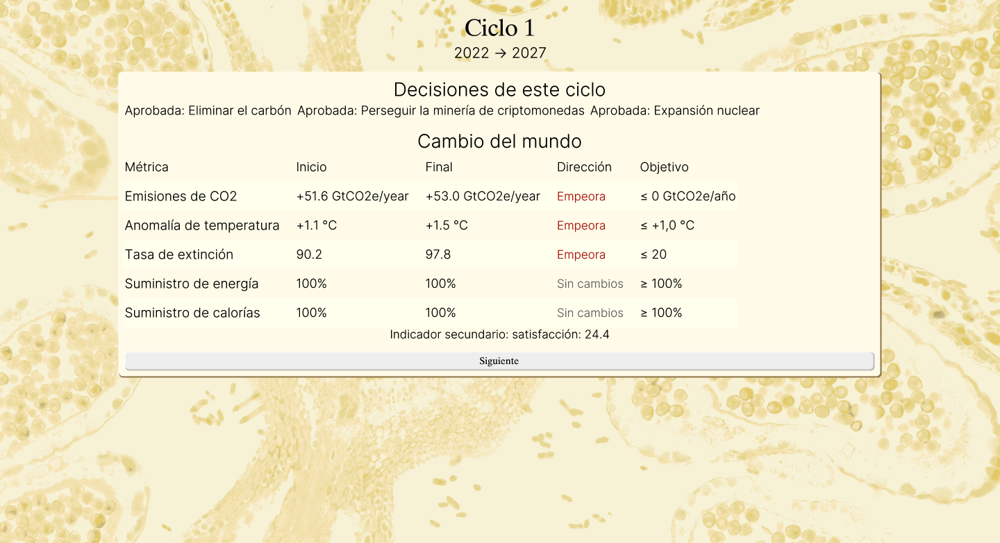
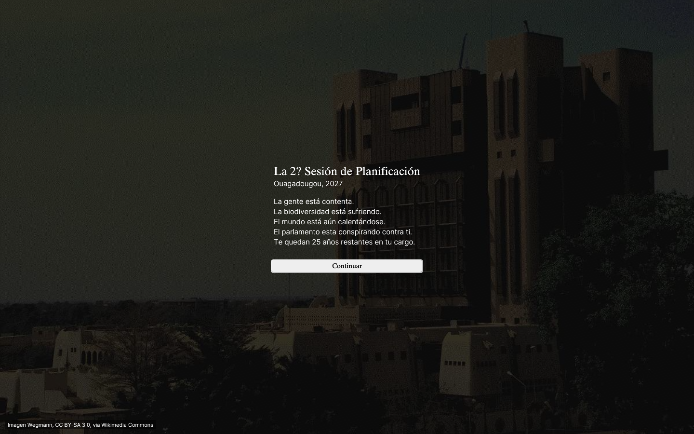
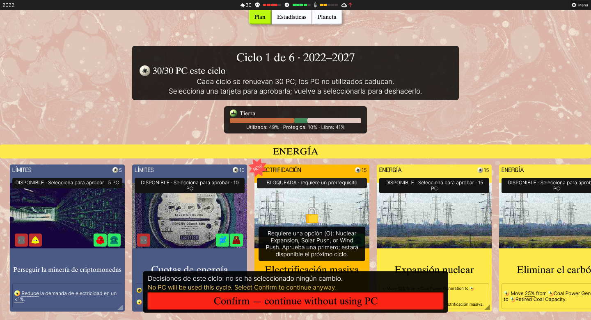
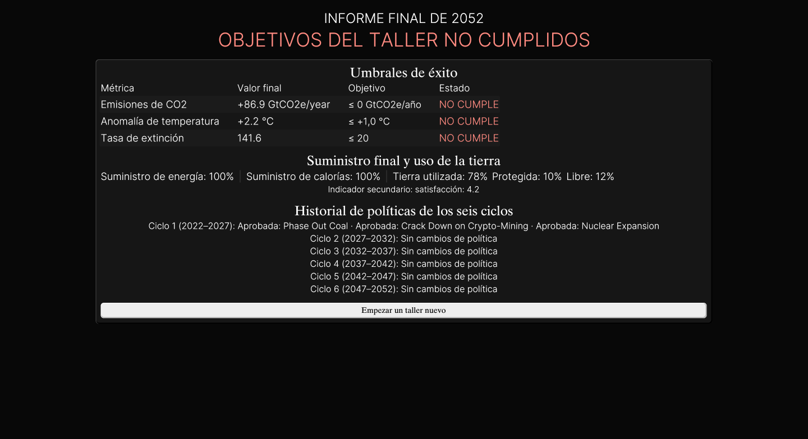

Guía de juego · modo taller
Un planeta habitable no se improvisa.
Este taller es una partida compartida de seis ciclos. El grupo debate; la persona moderadora decide qué tarjetas se aprueban y después observa sus consecuencias.
La ruta de las capturas es ilustrativa. No es una receta para ganar: las decisiones cambian qué se desbloquea y cómo termina cada partida.
Antes de empezar
1. Arranca la partida
Desde la raíz del repositorio ejecuta env -u NO_COLOR just run-web. Abre http://localhost:8080/?workshop=1 y elige es.
2. Reparte el papel
Una pantalla proyectada, una persona moderadora y una conversación. El grupo puede votar en voz alta; no hace falta un dispositivo por participante.
3. Mira las restricciones
Cada ciclo empieza con 30 PC. Las tarjetas cuestan 5, 10 o 15 PC y el saldo que no gastes desaparece al pasar de ciclo.
El bucle de un turno
- Lee el año y el presupuesto. La partida recorre seis ciclos de cinco años: 2022–2027, 2027–2032, hasta 2047–2052.
- Compara las tarjetas. Cada una muestra su coste, sus efectos y, si está bloqueada, el prerrequisito que la habilita.
- Aprueba o deroga. Seleccionar una tarjeta la aprueba; seleccionarla otra vez deshace la selección. Una política activa se puede derogar en un ciclo posterior.
- Pulsa «Listo». La simulación avanza al siguiente informe. Las consecuencias de las decisiones aparecen allí, junto con sus tendencias.
- Comenta el cambio. Una cifra aislada cuenta menos que la dirección del cambio y la tensión entre suministro, tierra, clima y biodiversidad.
Qué conviene vigilar
Clima
Emisiones de CO₂ y anomalía de temperatura. Las políticas pueden mejorar una métrica y empeorar otra.
Vida
La tasa de extinción resume la presión sobre la biodiversidad. El uso y la protección de la tierra importan.
Suministro
La energía y las calorías comparan producción con demanda. Un porcentaje menor del 100% es una señal de escasez.
Tierra
El indicador separa tierra utilizada, protegida y libre. Es una restricción persistente, no una puntuación que se pueda ignorar.
Satisfacción
La satisfacción aparece como indicador secundario. Ayuda a hablar de los costes sociales de una decisión sin convertirla en el único objetivo.
Progresión y final
Los prerrequisitos se comprueban entre ciclos. Una tarjeta que habilites durante el ciclo actual suele aparecer como disponible en el siguiente; por eso el grupo debe mirar también la columna de tarjetas bloqueadas.
Al llegar a 2052 aparece el informe final. El taller considera tres umbrales: emisiones de CO₂ de 0 o menos, temperatura de +1 °C o menos y tasa de extinción de 20 o menos. La pantalla muestra además suministro final, tierra, satisfacción e historial de políticas. Son umbrales de evaluación del modo taller, no promesas de un resultado concreto.
Capturas de referencia
Estas imágenes documentan una sesión concreta. Úsalas para orientarte por la interfaz, no para copiar una secuencia exacta.







Qué debe registrar el grupo
- ¿Se entiende qué se puede seleccionar y cuánto cuesta?
- ¿Se entiende por qué una tarjeta está bloqueada?
- ¿El ritmo deja tiempo para debatir?
- ¿Las consecuencias aparecen donde el grupo las espera?
- ¿Se ven los intercambios entre clima, suministro, tierra y biodiversidad?
- ¿Algún efecto parece demasiado fuerte, débil o difícil de interpretar?
- ¿Una decisión produce un resultado contradictorio?
- ¿Hay texto cortado, inglés inesperado, botones confusos o errores de consola?
- ¿El contenido horizontal sigue siendo accesible a 1280×800?
- ¿Qué momento hizo que el grupo cambiara de opinión?